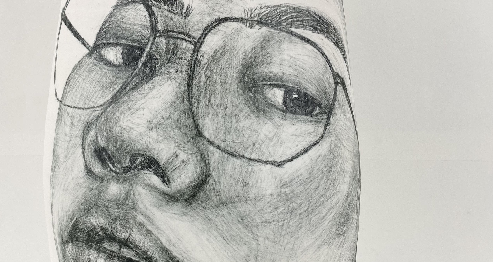
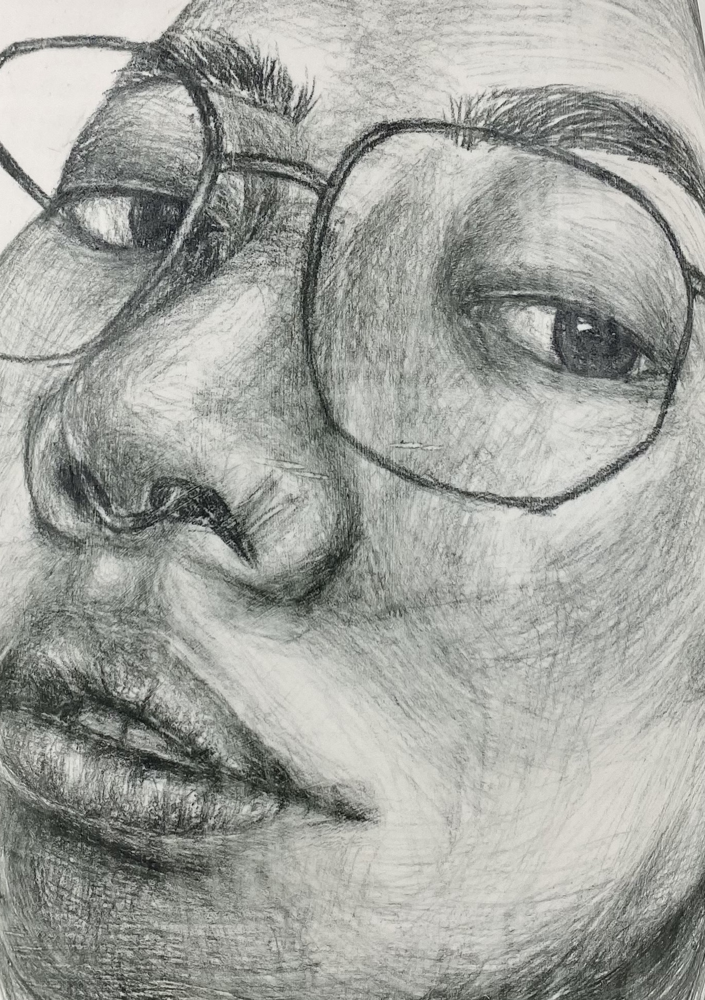
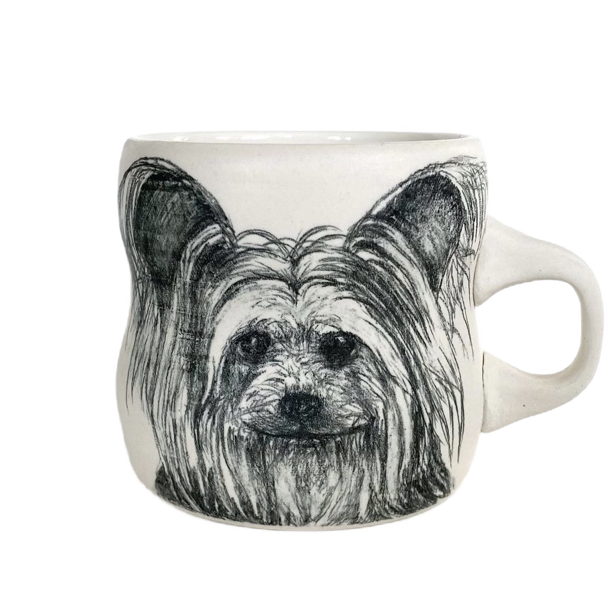
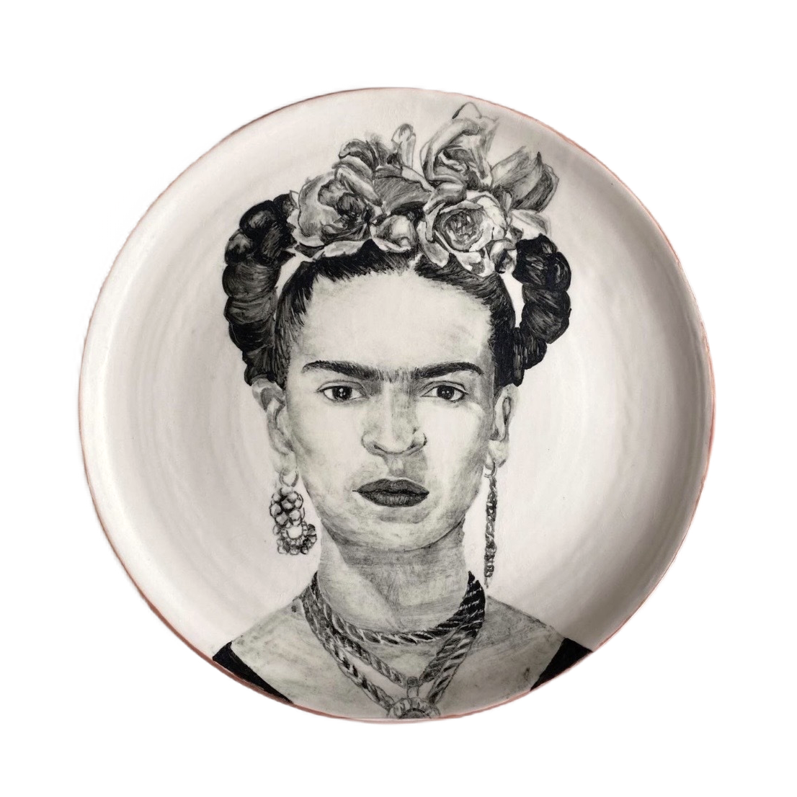
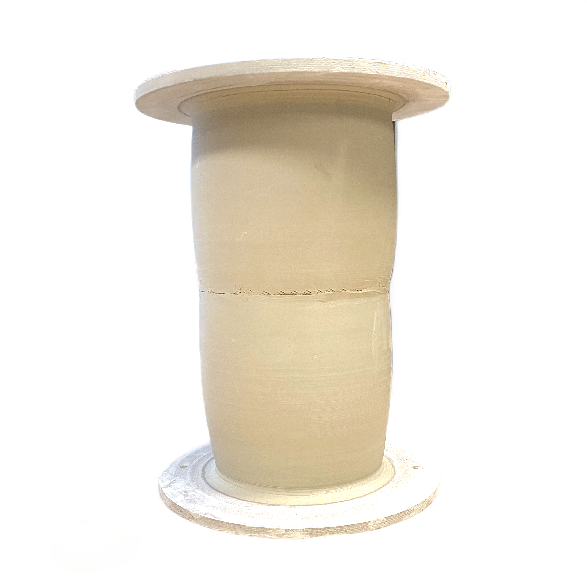

 
Welcome to Stephanie Kim ceramics
My drawing and painting background met my new-found love for ceramics.

I began to make pet portrait commission mugs with underglaze pencil.
More pet mugs
Wanting a challenge, I moved onto portraits of people while also practicing painting with semi-moist underglaze.

Wanting a challenge, I moved onto portraits of people while also practicing painting with semi-moist underglaze.
I discovered that self-portraits are very expressive, with the perk of being able to customize my own references through selfies.
At the same time, I pushed myself to create larger, structurally challenging forms.

At the same time, I pushed myself to create large and structurally challenging forms.
Putting everything together, I made large 3D canvanses for drawing. (Much larger than the pet portrait mugs.)